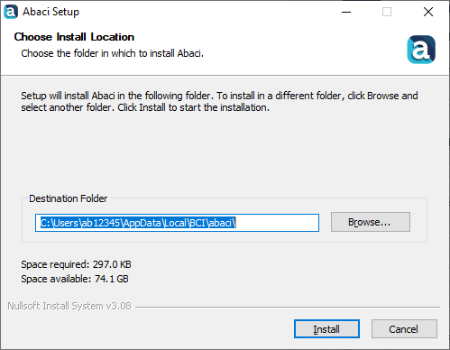

How to Install/Update Abaci#
Prerequisites#
The following software is required to use abaci:
Abaqus
Intel Fortran Compiler
Note
To use abaci, Abaqus and the Intel Fortran compiler need to be available within your command line environment.
On Windows you can use the ‘Abaqus Command + iFort’ link from the start menu
On Linux, you can add the appropriate environment module or source the setvars script from your Intel compiler installation.
Check Environment#
You can check that all prerequisites are available by running the following commands in your terminal:
abaqus information=version
ifort --version
which should output information about the current Abaqus and Intel Fortran compiler versions. If either of these commands fails, then you should first check your environment is setup correctly.
Option 1 (Recommended): Installers#
Self-contained installers are available to download for Windows and Linux from the latest release page.
Hint
You do not need to be an administrator to use the Abaci installers, since they will install for the local user only.
Windows#
Simply download the abaci-installer.exe executable from the latest release page
and run the installer.
It is recommended to leave the default destination folder unchanged

On Linux#
Download the abaci-installer.sh script from the latest release page
and then enable execution with:
chmod u+x abaci-installer.sh
Then execute with:
./abaci-installer.sh
The Linux installer will install abaci to $HOME/.local/bin, so you should ensure that this folder is on your path if not already;
you can do this by adding the following line to the end of your $HOME/.bash_profile file:
export PATH=$PATH:$HOME/.local/bin
Option 2: Clone the Repository#
First clone the repository with git:
git clone https://github.com/BristolCompositesInstitute/abaci.git
Then run one of the installation scripts in the scripts subfolder:
./scripts/installon Linux./scripts/install-windows.cmdon Windows
The Linux installer will install abaci to $HOME/.local/bin, so you should ensure that this folder is on your path if not already.
Check Your Installation#
After following the installations instruction above, you can verify your abaci installation by opening a command window and running:
abaci --version
which should output version information for abaci.
Update your Abaci Installation#
Option 1: Command Line (Requires git)#
If you have git installed, then you can easily update Abaci from the command line with the following command:
abaci --update
As with installing abaci, this command does not require administrator rights.
You may update from a specific release version or GitHub branch with:
abaci --update <ref>
where <ref> is either a git commit, tag or upstream branch.
See the command line reference for more information.
After following the installations instruction above, you can verify your abaci installation by opening a command window and running:
abaci --version
which should output version information for abaci.
Option 2: Reinstall (Git not required)#
Download the latest installer from latest release page and rerun - this will overwrite and update any existing Abaci installation.
Install Locations#
The self-contained Windows installer will install Abaci files to
c:\Users\<username>\AppData\BCI\abaci by default.
The Windows installer script (install-windows.cmd) and will place
the launcher script in c:\SIMULIA\Commands (with the abaqus launcher).
The Linux installer script will install Abaci files to $HOME/.local/lib/abaci and will place
the launcher script in $HOME/.local/bin.